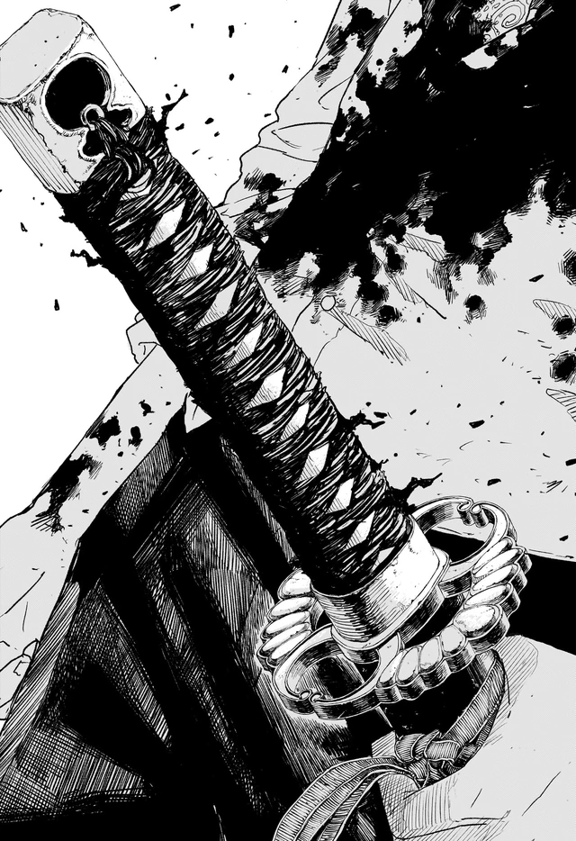

Malediction is not one of Magatsumi’s insect names. It is an extension — True Realm as policy. Akemura decides the islanders should end, and the blade learns a wider mouth. Flowers are the visual because the sword already ate people as gardens; he simply asked for a field the size of a nation.
The other bearers fail in the room and then succeed in the press. Kunishige hides. Samura blinds himself twice: once as training, again as fatherhood. Kasen, years later, still thinks the blades are a path to order, which is how you get a director leaking a smith’s address to the Hishaku. The cover-up is not a twist. It is the water the present-day plot has been swimming in since page one.
Yura’s conversion is the scary political joke. He wanted Akemura dead to open a contract. He meets the man and recognizes a colleague. Chihiro’s generation inherits both the flowers and the lie about who planted them.